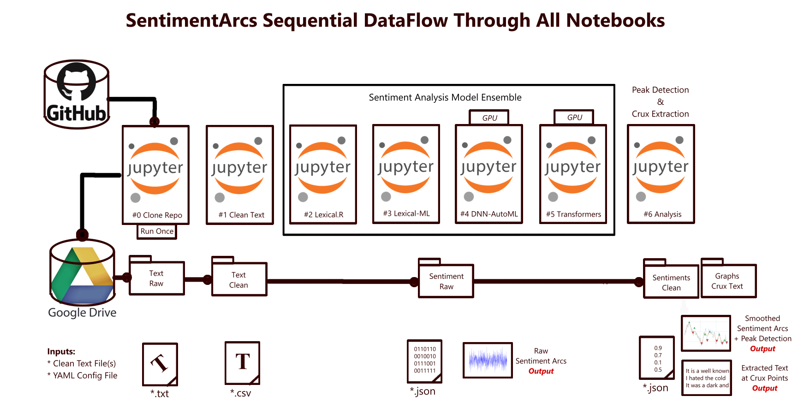

Software
Research code, benchmarks and teaching material, all public on GitHub and maintained since 2019. The methods below were developed to make humanistic questions measurable without flattening the ambiguity that makes them interesting, and to build evaluation into systems from the start rather than bolting it on at review time.
Featured projects
-
SentimentArcs
A large ensemble of dozens of sentiment analysis models for analyzing emotion in text over time. Model disagreement is treated as interpretive data, curves are downsampled with LTTB to preserve peaks and valleys, and dynamic time warping compares arcs across texts of unequal length. The technical basis for The Shapes of Stories (Cambridge University Press, 2022).
-
MultiSentimentArcs
A novel method to visualize multimodal AI sentiment arcs in long-form narratives, and the first fully open-source framework for diachronic multimodal sentiment analysis. Measures emotional coherence across film dialogue and imagery.
-
AIStorySimilarity
A benchmark for long-text story similarity grounded in narrative theory, with applications to search, intellectual property infringement and guided creativity. Published at ACL EMNLP/CoNLL 2024.
-
LLM Ethics Audit
A novel ethics-based audit of the state-of-the-art LLM chatbots, comparing the ethical frameworks the leading models invoke and where those frameworks diverge under pressure.
-
GenAI Multi-Agent Networks and Digital Twins
Generative AI, multi-agent systems, AI research methodology, industry best practices and the future of work. The full course repository for Kenyon College IPHS 391, Fall 2025.
-
IIoT Time Series Prediction System
An end-to-end industrial Internet of Things time series prediction system, built for predictive maintenance and developed with an industry collaboration.
-
CEI Benchmark
The Contextual Emotional Inference benchmark: a pragmatic reasoning dataset of 300 human-validated scenarios with replication code. Data under CC BY 4.0, code under MIT.
-
AgenticSimLaw
Multi-agent debate simulation of a US bench trial predicting juvenile recidivism, with prosecutor, defense and judge roles over a seven-turn structured debate. Accepted at the AAAI-26 LaMAS workshop.
-
International AI Regulation Survey
Code and data comparing AI regulations in the EU, the US and China, supporting the comparative global AI regulation work.

Recently updated
Fetched live from the GitHub API when this page loads.
All public repositories
Every public, non-archived repository, grouped by theme. Scaffolding and
empty repositories are omitted. Regenerate this list with
python3 scripts/build_repos.py.
SentimentArcs & Narrative 63
- sentimentarcs_notebooks SentimentArcs: a large ensemble of dozens of sentiment analysis models to analyze emotion in text over time
- GenAI-Multi-Agent-Networks-and-Digital-Twins Generative AI, Multi-Agent Systems (MAS), AI Research Methodology, Industry Best Practices, and The Future of Work (Kenyon College's Integrated Program for Humane Studies Program Fall 2025)
- multisentimentarcs A Novel Method to Visualize Multimodal AI Sentiment Arcs in Long-Form Narratives
- sentiment-analysis-reference-corpus-novels Reference Corpus of Novels for Sentiment Analysis
- 2020spr_creative
- 2020spr_engl
- AI-LIT AI-LIT: Using AI Embeddings to find what is Lost in Translation
- facial_emotion_recognition
- llm-sota-chatbots-ethics-based-audit A novel ethics-based audit (EBA) of the state-of-the-art LLM chatbots
- nabokov_palefire
- sentimentarcs-website A webified version of SentimentArcs (ported and expanded from original Jupyter Notebooks)
- sentimentarcs_simplified A simplified version of SentimentArcs Notebooks
- AIStorySimiliarity AI Story Similarity
- anna-karenina-sentiment-analysis A lexicon-based sentiment and emotion analysis of Anna Karenina by Leo Tolstoy using the NRC lexicon.
- arxiv-research-local Local LLM and VecDB to research ArXiv with Gradio UI
- awesome-dataset-creation Curated list of resources for creating original datasets for original Data Science, Machine Learning and AI research and projects
- CNAPipeline This repository contains a number of experiments to inform the design of an NLP pipeline enabling Conflict Narrative Analysis
- computational-digital-humanities-analytics Analytics on Computational Digital Humanities from Kenyon College Human-Centered AI Research
- conference-narrative2020-GPT2-NLG Presentation on NLG using GPT-2 for Narrative2020 Conference in New Orleans
- deepmusicviz
- genai-music-metrics A Qualitative Benchmark and Composite Metric on Generative AI Music
- get-youtube-transcripts
- get_youtube_transcripts Repo to get transcripts from YouTube channels
- great_gatsby
- haikus-for-codespaces
- iphs391_fall2025_mp2_embedding-research-project
- katherineelkins-com-dev Development repo for katherineelkins.com — AI safety researcher personal site
- mirror-specstory-docs Mirror of SpecStory Documentation on iterative/interactive chat-generated SDD
- multilingual-sentimentarcs Multilingual Diachronic Sentiment Analysis using SentimentArcs
- NLP-Project -- 1. NLP-Tutorial-Project: End-to-End NLP project to analyze what makes Ali Wong's comedy routine stand out? - Alice Zhao --- nltk, genism, TextBlob, sklearn
- novels_sentiment_analysis
- plays_chekhov
- proust_fr
- proust_new
- proust_old C. K. Scott Moncrieff translation from Gutenberg
- scrape-edgar Python scrape SEC EDGAR script
- scripts_comedy
- scripts_sitc
- sentiment-analysis-reference-corpus-finance Reference Corpus of Financial Texts for Sentiment Analysis
- sentiment-analysis-reference-corpus-social-media Reference Corpus of Social Media Texts for Sentiment Analysis
- sentiment-arcs
- Sentiment-XAI-Greybox-Ensemble
- sentiment_arcs Diachronic (time series) sentiment analysis of text by Jon Chun for Cambridge University Press Elements book by Katherine Elkins
- sentiment_cruxes
- sentimentarcs-film Diachronic Sentiment Analysis of Film (including Movies and TV Shows)
- SentimentArcs-Greybox Grey-box sentiment analysis ensemble using SOTA OpenAI gpt-3.5-turbo-0631 and gpt-4-0613 function in teacher-student-like XAI grey-box configuration with smaller, faster, cheaper sentiment models
- sentimentarcs-novels Diachronic Sentiment Analysis of Novels and Stories
- sentimentarcs-xai A novel greybox XAI methodology for diachronic sentiment analysis
- sentimentarcs_2025 IPHS Colab SentimentArcs version 2025
- sentimentarcs_llms SentimentArcs with LLM models
- sentimentarcs_original Sentiment Analysis for Narrative Arcs
- sentimentarcs_russian SentimenArcs Russian
- sentimentarcs_social-media Diachronic sentiment analysis of social media narratives using SentimentArcs
- sentimentarcs_transformers SentimentArcs ensemble of Transformers
- sentimenttime
- staugustine_confessions
- StoryArcs StoryArcs
- the_helix_center_transcripts The Helix Center Roundtable Transcripts
- tube-sift Research-scale YouTube content analysis — from collection to insight.
- webport WebPort for porting simple websites (e.g. WordPress) by scraping content, data, metadata, data schemas, etc. It also analyzes UI/UX, data architecture, overall site design and control flow to generating comprehensive standard product and development documentation targeted for future AI-assisted custom website generation.
- woolf_4books_sentiment
- youtube_transcribe_search Transcript YouTube Videos then use embeddings for search
- YT-DJ-Playlist YouTube DJ Playlist
AI Evaluation, Safety & Policy 13
- llm-web-scraping Benchmarking LLM generated web scraping utilities
- ai-regulation-eu-us-china AI Regulation and Open Source in the EU, US, and China
- cei-tom-benchmark-anon
- cei-tom-dataset
- cei-tom-dataset-base CEI Benchmark: pragmatic reasoning dataset and replication code (v1.0.2). Data CC BY 4.0, code MIT.
- cei-tom-dataset-public Replication package for the NeurIPS 2026 paper: CEI — A Benchmark for Evaluating Pragmatic Reasoning in Language Models. 300 expert-authored scenarios, 5 pragmatic subtypes, Plutchik+VAD annotations, 7-LLM baselines.
- copyright-evals
- international-ai-regulation-survey Comparing AI Regulations in the EU, US, and China
- iphs391_mp3_graphrag_benchmarks IPHS391 Benchmarking GraphRAG against RAG
- madcal-calibration AgenticSimLaw: Multi-Agent Debate Simulation of US Bench Trail Predicting Juvenile Recidisim
- mla-generative-ai My ChatGPT and LLM Presentation for Ethics And Practice Of AIs In The Academy (Session 148 At MLA 2024) Chaired by Alan Liu
- my-custom-jupyter-website Tutorial demo
- oss-security-audit A partial or fully automated multi-stage pipeline to perform security audits on open-source software
Agents & LLM Tooling 18
- langchain-experiments Notebooks and code to test langchain
- claude-code-agent-exercise Claude Code Agent Exercise
- frontiers-of-ai-automating-intelligence-with-multi-agent-frameworks Kenyon College Integrated Program for Humane Studies Fall 2024: Automated Knowledge Workflows with AI Agent Networks
- llms-theory-and-practice-denison-university Denison University CS and Math Department Talk on the Theory, Practice and Future Directions of Large Language Models
- transformers-explained Explaining Transformers
- ancient-greek-nlp
- cite-guard Claude Code Skills for Verifying Citations in Academic Papers
- dev-setup Configurations and Debugging of Claude Code
- fine-tune-creole-models Release-safe code for fine-tuning models for under-resourced Louisiana languages
- iphs-2024-transformers
- iphs391-GenAI-Agents Kenyon College IPHS 391 Fall 2024 Generative AI and Autonomous Agents
- kenyon-college-confidential-chatbot A specialized chatbot for giving the inside skinny on all the resources at Kenyon College
- nano-graphrag Copied and customized from gusye1234/nano-graphrag
- ollama-multi-gpus Information and code on using Ollama to serve models across multiple GPUs
- ollama-structured-output Ollama Structured Outputs with Dec 2024 release
- summarize-hnews Summarize Hacker News by first extracting/summarizing (w/OpenAI) each thread and all resources before creating overall outline
- synthetic-finetune-RAG IPHS300 Synthetic Data to Fine-Tune Embedding Models for More Performant RAG System
- text2img-openvino-kenyon-logo Stable diffusion with Intel OpenVINO to mock up new Kenyon Logo ideas
Courses & Teaching 26
- 2018-fall-kenyon-iphs391 Spring 2019 Kenyon College IPHS391: AI for the Humanities
- 2020spr_projects
- cultural-analytics Computational Cultural Analytics
- cultural-analytics-networks Kenyon IPHS Cultural Analytics - Network Analysis
- cultural-analytics.github.io Computational Cultural Analytics Course at Kenyon College
- mla-promoting-ai-digital-humanities MLA 2024 Convention: Promoting AI Digital Humanities Projects
- programminghumanity
- ai-for-humanity Main page for AI for Digital Humanities and DHColab https://www.kenyon.edu/digital-humanities/
- ai-swe-best-practices Kenyon College Integrated Program for Humane Studies (IPHS) Fall 2026 Course IPHS 400 on AI Software Engineering and Software Development Lifecycle
- autotune-detection IPHS200 code support for code assistance
- codespace-intro
- computational-cultural-analytics Computational Cultural Analytics
- datacamp-project-neurips Kenyon IPHS300 2023spr: Datacamp Hottest Topics in AI
- digital_humanities_resources Digital Humanities Resources
- frontiersofai-org Kenyon College IPHS 400 Frontiers of AI
- generative_ai_roundtable A Roundtable on Generative AI for Text and Art (Kenyon College, Jan 2023)
- iphs200fall2020
- iphs290_cultural_analytics_lda_topic_modeling This is my analysis of twitter xxx using LDA Topic Modeling
- iphs300_2021_datasets
- iphs300_2023spr IPHS300 AI for the Humanites (Spring 2023) Kenyon College
- Kenyon-College-IPHS300-AI-for-the-Humanities-2022-Spring Kenyon College Integrated Program for Humane Studies (IPHS300) AI for the Humanities 2022 Spring
- mastering-functions-2022 This is a repo for mastering Python functions
- programming-humanity Social Sciences/Humanities-first Python and Computer Science Course
- rtd-tutorial ReadTheDocs Tutorial
- skills-introduction-to-github My clone repository
- theailab-net Kenyon College, Integrated Program in Humane Studies (IPHS) Human-Centered AI curriculum materials
Data Collection & Scraping 14
- ai-socratic-tutor
- DocuMindIntelliOCR
- human-in-the-loop-data-labeler Software for humans to quickly configure and label generic datasets
- nafems-anomalous-time-series-augmentation Notes and references for NAFEMS talk on augmenting anomalous time series datasets
- scrape-social-medias Scrape social media sites with Python
- crawl_websites General website crawlers
- extracting-sec.gov-filings Fork of extracting-sec.gov-filings to scrape SEC EDGAR with Python
- ocr-ensemble Minimal public scaffold for probabilistic reconstruction of degraded print
- scrape-twitter-api-v2-sqlite Scrape Twitter API ver2 to SQLite Database
- scrape-webpage-data
- scrape_website_with_ai Use AI to scrape Helix Center Website
- scraper-crawlee APIfy Crawlee scraper for websites
- youtube_downloader
- yt-content-analyzer YouTube Content Analyzer
Dev Tooling & Misc 39
- iiot-time-series-prediction-system An End-to-End Industrial IoT Time Series Prediction System
- network-notebooks
- ai-conferences-and-events AI conferences and events
- awesome-local-ai Collection of resources for running AI locally, decentralized, and on the edge from laptops to IoT devices
- nextjs-better-auth-postgresql-starter-kit
- openface-analysis The respository for Julianna's facial expression/cortisol project
- poml-examples Examples extracted from Microsoft POML repo
- unix-utils Misc UNIX utilties
- utility-html-to-markdown Customized repo to utilize https://github.com/Goldziher/html-to-markdown
- utility_docling Utility to convert docs between different formats using IBM's FOSS Docling
- utility_yt-dlt_2025
- agi-is-awesome
- ai-mlops MLOps in general and for AI in particular
- ai-setup-macos Setup MacOS for AI development (Terminal, Shell, etc)
- awesome_generative_ai_image Resources for Generative AI for Images and Art
- container-mlops-template.- alfredodeza/container-mlops-template.
- dev-hyperpersuasion-tom DEVELOPMENT REPO for Hyperpersuasion ToM
- doc-diff Compare two documents, identify and enumerate the differences (edits)
- doc-shape-shifter Universal document transformation between formats where plausible
- generative_art Notebooks tested, debugged and/or enhanced for generative art
- git-repo Demo
- hbo_silicon_valley_gilfoyle_bitcoin_drop_bot HBO Silicon Valley: Bertram Gilfoyle's Bitcoin Price Drop Alert Bot
- lexvarsdatr A collection of behavioral data sets & some functions for extracting semantic associations and network structures from term-feature matrices.
- linux-sysadmin-utilities Linux/Ubuntu programs to automate system admin tasks
- MyArXiv
- n8n-io-nodes-starter
- pong-oop Pong in Object-Oriented Paradigm (Python)
- pong-procedural Pong game in Procedural Paradigm (Python)
- prune-code Prune code and github repo trees for efficient distillation and summarization for more effective AI context engineering
- prune-github-repo-for-ai-context-engineering Selectively prune a local existing Github repo for efficient context engineering tailored to AI-assisted coding
- reactive-resume-auto-composer Reactive Resume Auto Composer: Create customized resumes, cover letters and emails tailored to your experiences and a particular job
- references-theoretical-cs
- resources-geospatial-analysis A taxonomy of Geospatial Analysis resources for Computational Cultural Analytics
- reverse-engineer-simple-website
- skills-toolbox Toolbox of AI Coding Skills
- storm Customized local-running copy of Stanford Storm Project
- Time_Series_Analysis_I TSA is a collection of data points collected at constant time intervals. These are analyzed to determine the long term trend so as to forecast the future or perform some other form of analysis
- tm_mid_docs
- validate_github_limits Validate the local repo falls within Github limits before attempting to add/commit/push to Github.com remote repo